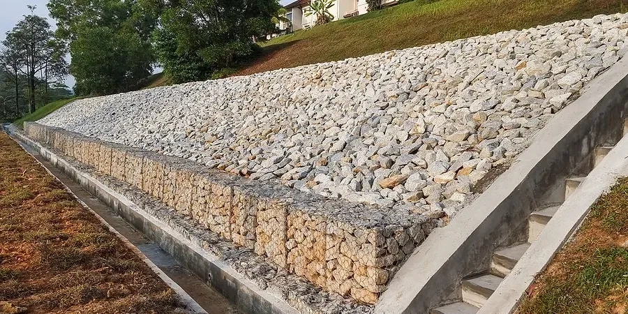

Delta BC sits on the Fraser River delta, a landscape built from centuries of sediment deposition. The topsoil here is predominantly silty clay with high organic content, underlain by loose sands and peats. This layered profile, combined with seasonal high water tables and intense winter rainfall, makes the ground inherently prone to erosion. Our team has evaluated dozens of sites across Burns Bog and Boundary Bay, where even a 2:1 slope can fail after a single heavy storm. We start every soil erosion analysis with a field reconnaissance to map drainage patterns, measure existing rill formation, and sample topsoil for particle size distribution. Before we run the predictive models, we often recommend a permeability field test to understand infiltration rates, and a classification of soils to identify the most erodible horizons.

In Delta BC, a 2:1 slope can fail after one storm. RUSLE2 models must use local rainfall data, not generic values.
Methodology applied in Delta BC
- Rainfall intensity and runoff volume for a 10-year storm event
- Soil erodibility (K-factor) based on texture, organic matter, and permeability
- Slope length and steepness (LS-factor) using high-resolution LIDAR topography
Local geotechnical conditions in Delta BC
We deploy tilting-flume erosion flumes and rainfall simulators on site to directly measure detachment rates. In Delta BC, we often work on construction sites where earthworks expose the underlying peat layers. Those peats, once dried, become hydrophobic and accelerate surface runoff. The real risk is that a developer clears land in summer, erosion goes unnoticed, and by winter the topsoil loss exceeds 15 tonnes per hectare. We have seen retaining walls undermined and sediment basins overloaded because nobody ran the numbers beforehand. A soil erosion analysis catches that problem before concrete is poured.
Our services
We offer three specialized soil erosion analysis services tailored to Delta BC conditions. Each includes field data collection, RUSLE2 modeling, and a mitigation plan.
Construction Site Erosion Assessment
Rapid field survey and sediment basin design for active construction sites. Includes silt fence placement, check dam sizing, and weekly monitoring reports during earthworks.
Slope and Bank Stability Erosion Study
Detailed analysis of natural slopes, riverbanks, and drainage channels. We measure soil shear strength at the surface, model critical storm events, and recommend armoring or vegetation solutions.
Agricultural Land Erosion Plan
Designed for farms and greenhouses in Delta BC. We map tile drainage networks, assess soil loss under different tillage practices, and provide crop rotation recommendations to maintain topsoil.
Frequently asked questions
How much does a soil erosion analysis cost in Delta BC?
For a typical residential or small commercial lot, expect between CA$1,060 and CA$3,920. The range depends on site size, number of storm scenarios modeled, and whether we need rainfall simulator tests. We provide a fixed-price quote after the initial site walk.
How long does the analysis take from start to finish?
Fieldwork usually takes one to two days, depending on the number of sample locations. After that, laboratory analysis and RUSLE2 modeling take about one week. The full report, including mitigation recommendations, is delivered within ten business days.
Do I need a soil erosion analysis for a small backyard retaining wall?
Most municipalities in Metro Vancouver require an erosion and sediment control plan for any excavation exceeding 100 cubic meters. For a small retaining wall, you may not need a full RUSLE2 model, but we recommend at least a qualitative assessment to avoid drainage issues behind the wall.
What happens if I skip the analysis and erosion occurs anyway?
The consequences can be expensive. If sediment runs off your property into a municipal storm drain or a salmon-bearing creek, you face fines from the Department of Fisheries and Oceans and the local municipality. Remediation costs, including sediment removal and slope repair, typically run two to four times the cost of the initial analysis.